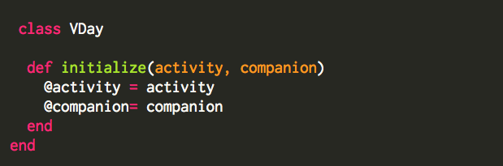
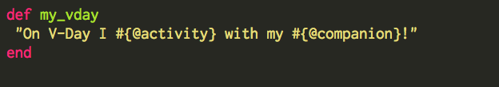
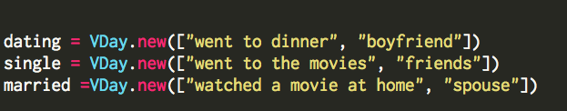
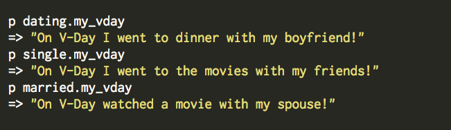

Classes in Ruby
Feb 13th, 2015
The first rule of Ruby is that everything-- well, almost everything-- in Ruby is an object. Ruby classes help us organize and categorize all these objects as well as give them certain characteristics that modify them within the class.
Ruby’s comes with classes built-in classes but also allows people to get super creative and create their own classes. Classes can go by any name, but for this example we’ll name the class VDay for Valentine’s day. Notice the class title is written in CamelCase, class titles are always written in this case.

Along with creating the VDay class, we are also creating the instance variables @activity and @companion. Those will hold their characteristics throughout the entire class.
Next we define a method that will help us bring our class to life. This method is the my_vday method, a string that interpolates instance variables activity and companion.

We then create three variables and define their arguments (activity and companion) for three different situations: single, dating and married.

You can see when these are called upon they fill in different data for the same string. All interconnected, the string, variables and methods exist within the class VDay.
